Kiến tạo giá trị qua
Công nghệ & AI
Xin chào! Mình là Ngô Văn Giang, sinh viên Trường Đại học Công nghệ (VNU-UET). Chào mừng bạn đến với không gian Portfolio cá nhân của mình, nơi ghi lại trọn vẹn hành trình khám phá, ứng dụng và làm chủ Trí tuệ nhân tạo trong môn học Nhập môn Công nghệ số và AI.
Với niềm đam mê mãnh liệt dành cho công nghệ lõi và tư duy logic, mình tin rằng AI không chỉ là một công cụ hỗ trợ tạm thời, mà là chìa khóa mở ra kỷ nguyên sáng tạo mới. Qua 6 bài tập lớn, mình đã biến những lý thuyết hàn lâm thành các sản phẩm thực tế: từ tự động hóa quy trình, tối ưu hóa Prompt Engineering đến xây dựng nền tảng đạo đức học thuật vững chắc.
"Công nghệ xuất sắc nhất không phải là công nghệ có thể thay thế con người, mà là công nghệ được định hướng bởi tư duy độc lập và sự liêm chính học thuật."

Mục tiêu Portfolio
Portfolio điện tử được xây dựng không chỉ để lưu trữ kết quả bài tập mà còn là minh chứng rõ nét cho:
- Khả năng tư duy hệ thống và thiết kế trực quan.
- Kỹ năng ứng dụng công cụ AI một cách sáng tạo và có đạo đức.
- Sự sẵn sàng về kiến thức và kỹ năng cho môi trường làm việc số chuyên nghiệp.
Định hướng cá nhân
Hiện tại, tôi đang tập trung trau dồi chuyên môn tại Đại học Công nghệ - ĐHQGHN (VNU-UET). Định hướng của tôi là đi sâu vào lĩnh vực Phát triển phần mềm, làm chủ các thuật toán cốt lõi, kiến trúc hệ thống và tích hợp thông minh AI để giải quyết các bài toán thực tế.
Hệ thống Bài tập & Dự án
Chi tiết 6 bài tập thành phần thể hiện năng lực ứng dụng công nghệ và trí tuệ nhân tạo, được thiết kế và thực hiện với tiêu chuẩn chuyên nghiệp.
📁 Quản Lí tệp và thư mục
Trình bày cấu trúc thư mục học tập khoa học. Áp dụng quy tắc đặt tên thư mục cá nhân (ThucHanh_hotensinhvien) để tối ưu hóa việc lưu trữ, truy xuất dữ liệu dài hạn qua File Explorer.
🔍 Tìm kiếm & Đánh giá
Nghiên cứu ứng dụng của LLMs trong tự động hóa sinh ca kiểm thử phần mềm.
💬 Kỹ thuật Prompt Engineering
Áp dụng các kỹ thuật nâng cao để tối ưu hóa khả năng của LLM.
🤝 Hợp tác trực tuyến
Đóng vai trò trưởng nhóm Backend, tích hợp công cụ hợp tác số để quản lý nhóm 4 người xây dựng hệ thống website đấu giá trực tuyến chuyên nghiệp.
🎨 Sáng tạo nội dung số
Sử dụng AI sinh tạo để thiết kế nội dung trực quan và bài Blog chuyên sâu.
⚖️ Đạo đức & Trách nhiệm AI
Nghiên cứu quy định Liêm chính học thuật của VNU-UET và nguyên tắc cá nhân.
Tổng kết & Tự đánh giá
Nhìn lại chặng đường học tập và sự phát triển kỹ năng qua môn học
🧠 Làm chủ nghệ thuật Prompt Engineering
Thay vì chỉ đặt những câu hỏi chung chung và nhận lại câu trả lời nông cạn, tôi đã học được cách thiết kế Prompt có cấu trúc chuyên sâu (bao gồm Persona, Context, Task, Format). Việc áp dụng thuần thục các kỹ thuật như Zero-shot, Few-shot và Chain-of-Thought đã giúp tôi biến các mô hình ngôn ngữ lớn (LLM) từ một công cụ tìm kiếm đơn thuần thành một "trợ lý tư duy" đắc lực, giải quyết mượt mà các bài toán lập trình và kiểm thử phần mềm phức tạp với độ chính xác cao.
🌍 Hợp tác số chuyên nghiệp & Quản trị dự án
Đảm nhận vai trò trưởng nhóm Backend trong dự án Đấu giá trực tuyến, tôi không chỉ đóng góp về mặt kỹ thuật mà còn ứng dụng triệt để các công cụ hợp tác số tiên tiến (GitHub, Trello, Google Workspace). Việc phân chia công việc minh bạch, quản lý rủi ro bài bản và tổ chức các phiên họp trực tuyến hiệu quả đã giúp nhóm chúng tôi phá vỡ hoàn toàn rào cản giao tiếp từ xa, hoàn thành xuất sắc hệ thống website với kiến trúc microservices vững chắc.
🛡️ Đạo đức & Trách nhiệm trong kỷ nguyên AI
Công nghệ mang lại sức mạnh to lớn, nhưng nó bắt buộc phải đi kèm với trách nhiệm. Thông qua việc nghiên cứu sâu sắc Quy chế Liêm chính học thuật của VNU-UET, tôi đã vạch ra ranh giới tuyệt đối rõ ràng giữa sự hỗ trợ hợp lý của AI và sự gian lận học thuật. Tôi xây dựng cho mình một bộ quy tắc đạo đức cá nhân sắt đá: AI là công cụ để kích thích và tối ưu hóa tư duy, tuyệt đối không phải là cỗ máy làm hộ để đối phó. Đây chính là nền tảng đạo đức cốt lõi cho sự nghiệp kỹ sư phần mềm chuyên nghiệp của tôi trong tương lai.
1. Mở File Explorer: Nhấn tổ hợp phím Windows + E hoặc nhấp vào biểu tượng thư mục màu vàng trên thanh tác vụ.
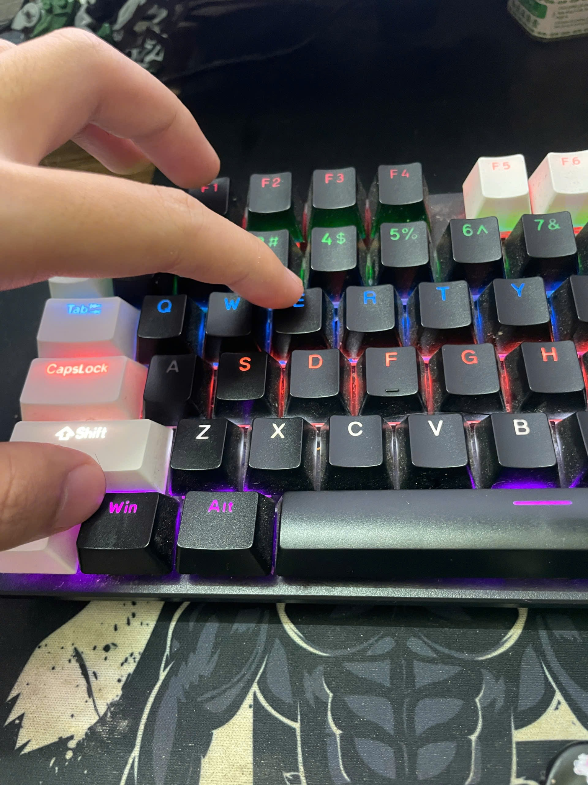
- Sau khi mở File Explorer:
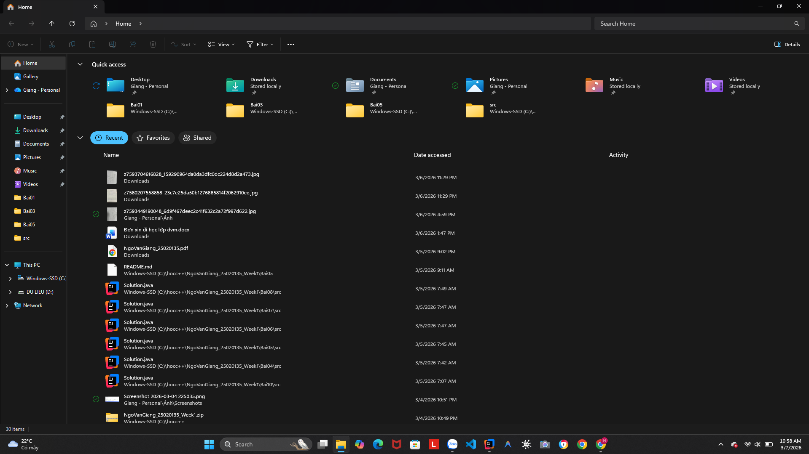
2. Truy cập ổ đĩa/thư mục: Ở cột bên trái, nhấp vào This PC, sau đó nhấp đúp vào một ổ đĩa không phải ổ hệ thống (ví dụ: ổ D: hoặc E:). Nếu chỉ có ổ C:, hãy vào thư mục Documents.
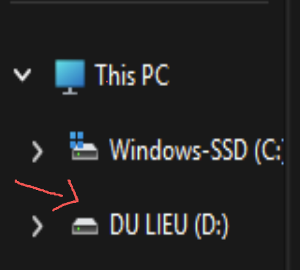
- sau khi vào ổ D:
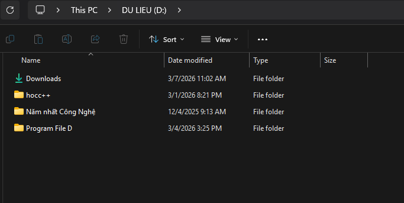
3. Tạo thư mục mới: Nhấp chuột phải vào một khoảng trống -> chọn New -> Folder. Đặt tên thư mục là ThucHanh_hotensinhvien (ví dụ: ThucHanh_NguyenVanA). Nhấn Enter.
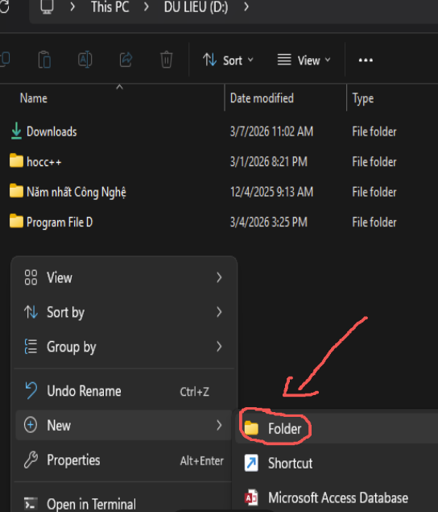
- Sau khi chọn New -> Folder:
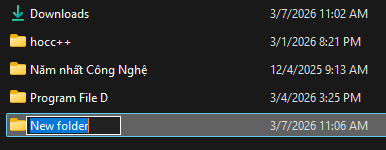
- Đổi tên và nhấn Enter :
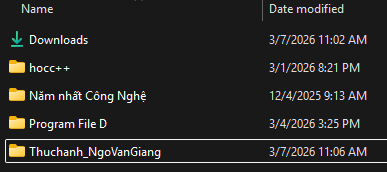
4. Vào thư mục vừa tạo: Nhấp đúp vào thư mục ThucHanh_NguyenVanA.
- sau khi nhấn đúp vào thư mục Thuchanh_NgoVanGiang :
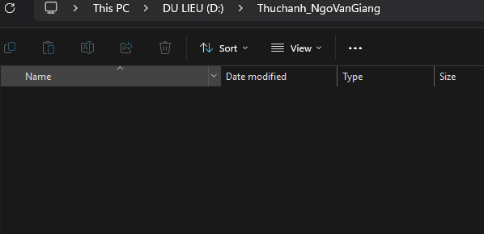
5. Tạo tệp tin văn bản: Nhấp chuột phải vào khoảng trống -> New -> Text Document. Đặt tên là GhiChu.txt. Nhấn Enter.
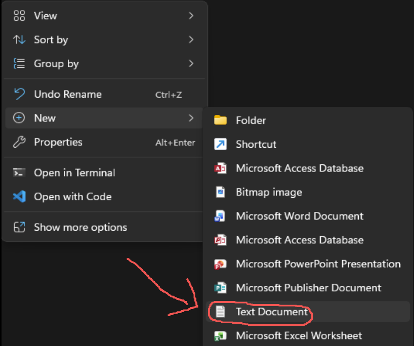
- sau khi chọn New -> Text Document :
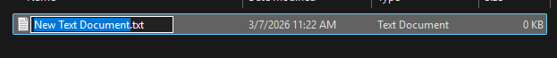
- sau khi đổi tên và nhấn Enter :
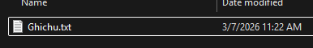
6. Đổi tên tệp tin: Nhấp chuột phải vào tệp GhiChu.txt -> chọn Rename. Đổi tên thành GhiChuQuanTrong.txt. Nhấn Enter.
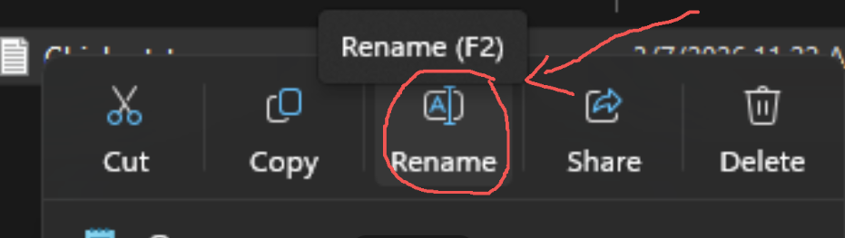
- sau khi chọn rename :
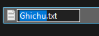
- sau khi đổi tên và nhấn Enter :
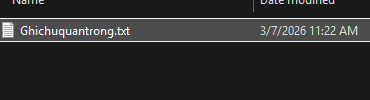
7. Tạo thư mục con: Trong thư mục ThucHanh_NguyenVanA, nhấp chuột phải -> New -> Folder. Đặt tên là TaiLieu.
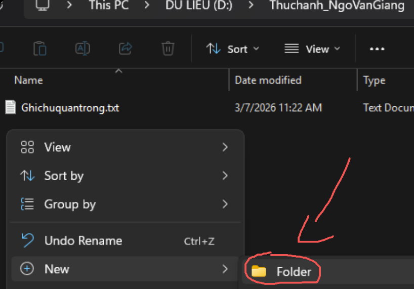
- Đặt tên là TaiLieu :
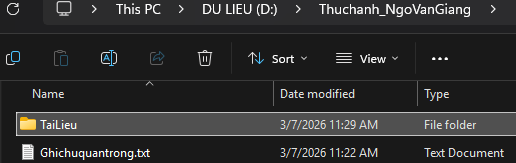
8. Sao chép tệp tin (Copy & Paste):
- Nhấp chuột phải vào tệp GhiChuQuanTrong.txt -> chọn Copy (hoặc chọn tệp rồi nhấn Ctrl + C).
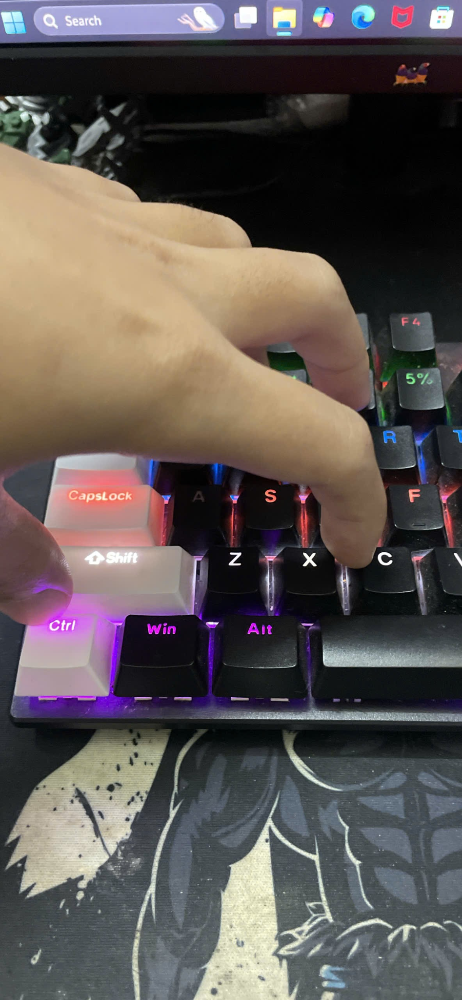
- Nhấp đúp vào thư mục TaiLieu, nhấp chuột phải vào khoảng trống bên trong -> chọn Paste (hoặc nhấn Ctrl + V). Bây giờ bạn có một bản sao của tệp trong thư mục TaiLieu.
- bấm tổ hợp phím Ctrl + V:
- sau khi bấm tổ hợp phím Ctrl + V :
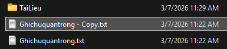
9. Di chuyển tệp tin (Cut & Paste):
- Quay lại thư mục ThucHanh_NguyenVanA. Tạo một tệp mới tên là DiChuyen.txt.
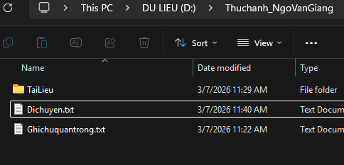
- Nhấp chuột phải vào tệp DiChuyen.txt -> chọn Cut (hoặc chọn tệp rồi nhấn Ctrl + X).
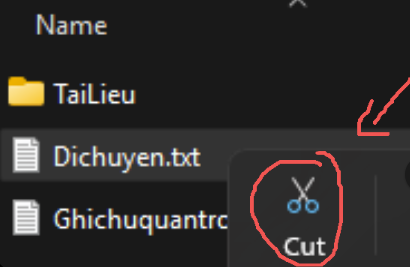
- Nhấp đúp vào thư mục TaiLieu, nhấp chuột phải vào khoảng trống -> chọn Paste (hoặc nhấn Ctrl + V). Tệp gốc đã biến mất khỏi vị trí cũ và chỉ còn ở vị trí mới.
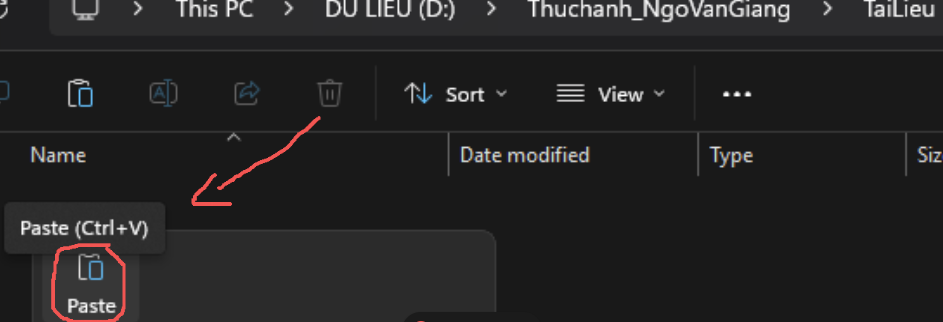
- sau khi di chuyển tệp gốc đã biến mất khỏi vị trí mới và chỉ còn ở vị trí mới
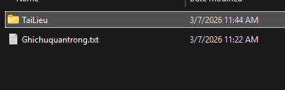
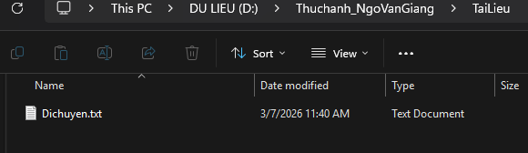
10. Xóa tệp tin: Trong thư mục TaiLieu, nhấp chuột phải vào tệp GhiChuQuanTrong.txt -> chọn Delete. Tệp sẽ được chuyển vào Thùng rác (Recycle Bin).
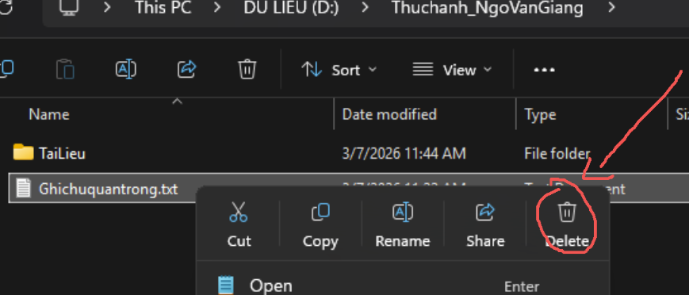
- tệp xuất hiện ở Thùng rác ( Recycle Bin)
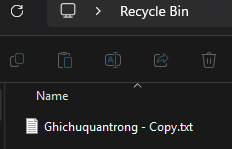
11. Xóa vĩnh viễn: Chọn tệp GhiChuquantrong.txt, nhấn giữ phím Shift và nhấn phím Delete. Một cảnh báo sẽ hiện ra. Nếu đồng ý, tệp sẽ bị xóa vĩnh viễn mà không qua Thùng rác.
- bấm tổ hợp phím Shift + Del:
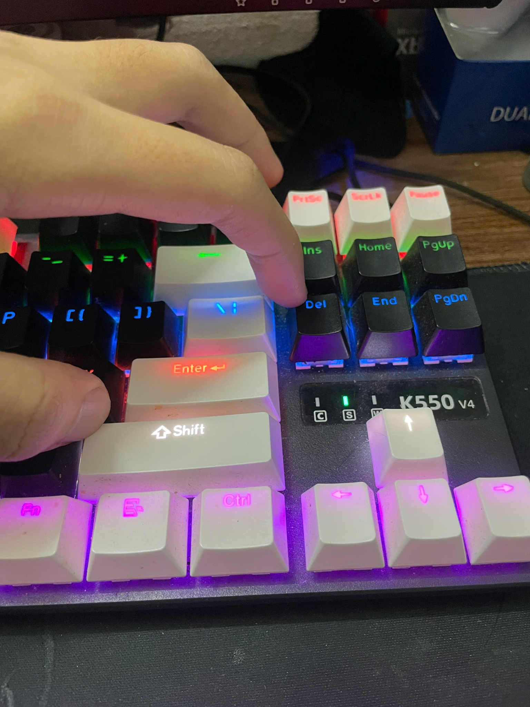
- Chọn Yes để xóa vĩnh viễn
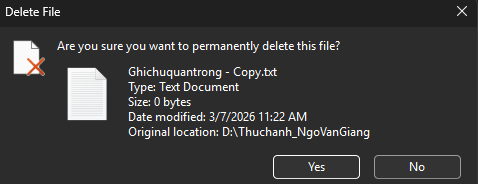
12. Khôi phục từ Thùng rác (Tùy chọn): Tìm biểu tượng Recycle Bin trên màn hình nền, nhấp đúp để mở. Tìm tệp GhiChuQuanTrong.txt đã xóa, nhấp chuột phải vào nó và chọn Restore. Tệp sẽ quay trở lại vị trí ban đầu.
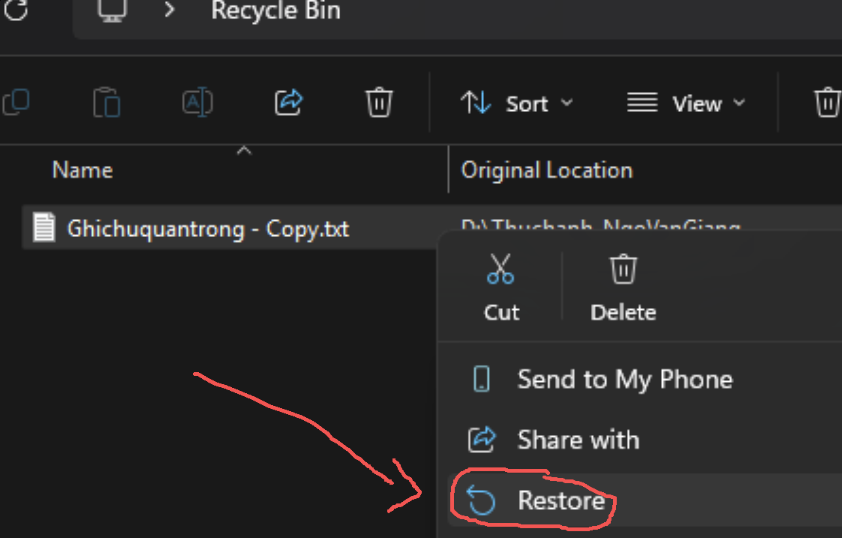
- sau khi chọn restore thì tệp xuất hiện tại vị trí ban đầu:
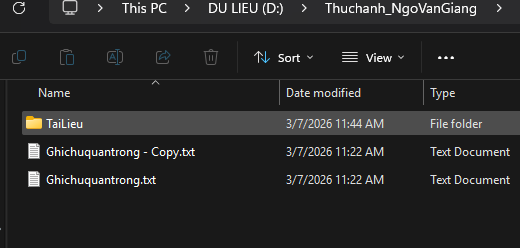
Chủ đề: Ứng dụng của Mô hình Ngôn ngữ Lớn trong Tự động hóa sinh ca kiểm thử phần mềm
I. Lựa chọn chủ đề và phạm vi tìm kiếm
- Chủ đề: Ứng dụng của Mô hình Ngôn ngữ Lớn (LLMs) trong Tự động hóa sinh ca kiểm thử phần mềm (Automated Test Case Generation using LLMs).
- Phạm vi tìm kiếm: Các nghiên cứu từ năm 2023 đến đầu năm 2026, tập trung vào việc đánh giá hiệu suất, tỷ lệ phát hiện lỗi (bug detection rate) và hiện tượng "ảo giác" (hallucination) khi sử dụng các mô hình như GPT-4, Claude 3 hoặc Llama trong kiểm thử phần mềm.
- Tính thách thức cao: Đây là một lĩnh vực công nghệ lõi đang thay đổi từng tháng. Việc tìm kiếm đòi hỏi phải chọn lọc kỹ giữa hàng ngàn bài báo mới xuất bản (pre-prints) để tìm ra các nghiên cứu thực nghiệm (empirical studies) có phương pháp luận đáng tin cậy.
II. Chiến lược và kết quả tìm kiếm
Quá trình tìm kiếm đã thu thập được 11 tài liệu , trong đó có 6 bài báo khoa học chất lượng cao . Nguồn tài liệu được khai thác đa dạng, bao gồm 4 nguồn bắt buộc và 1 nguồn mở rộng:
- Cơ sở dữ liệu học thuật: IEEE Xplore, ACM Digital Library, Google Scholar.
- Tạp chí khoa học chuyên ngành: IEEE Transactions on Software Engineering, Empirical Software Engineering.
- Sách chuyên khảo: Sách in/ebook từ các nhà xuất bản uy tín (Springer, O'Reilly).
- Nguồn mở trên internet: ArXiv (Pre-prints), Báo cáo kỹ thuật của các tổ chức công nghệ (OpenAI, GitHub).
- Nguồn khai thác thêm (Ngoài yêu cầu): Báo cáo phân tích thị trường công nghệ (Industry Reports từ Gartner) để đánh giá tính ứng dụng thực tiễn.
III. Bảng tổng hợp đánh giá và xếp hạng độ tin cậy
Lưu ý: Đánh giá được phân tích hệ thống dựa trên 5 tiêu chí: (1) Tác giả, (2) Cơ quan, (3) Phương pháp, (4) Trích dẫn, (5) Tính cập nhật và Phân tích Ưu/Nhược điểm.
STT | Tài liệu / Nguồn | Loại nguồn | Đánh giá độ tin cậy (Tác giả, Cơ quan, PP, Trích dẫn, Cập nhật) & Phân tích Ưu/Nhược điểm | Xếp hạng |
|---|---|---|---|---|
1 | Wang, J. et al. (2024) | Tạp chí khoa học (IEEE) | - Tiêu chí: Tác giả từ ĐH Stanford. NXB IEEE cực kỳ uy tín. Phương pháp: Systematic Review. Trích dẫn: Cao (>150 citations). Cập nhật: 2024. - Ưu điểm: Tổng quan toàn diện, peer-reviewed (đã qua phản biện) khắt khe. - Nhược điểm: Mất thời gian phản biện nên dữ liệu có thể trễ 6-8 tháng so với thực tế công nghệ. | Rất cao (A) |
2 | Lemieux, C. et al. (2023) | Tạp chí khoa học (Springer) | - Tiêu chí: Tác giả từ UC Berkeley. NXB Springer. Phương pháp: Thực nghiệm định lượng (Empirical). Trích dẫn: >80. - Ưu điểm: Đưa ra công cụ CODAMOSA cụ thể, có mã nguồn mở để kiểm chứng. - Nhược điểm: Mẫu thử nghiệm giới hạn ở ngôn ngữ Python. | Rất cao (A) |
3 | Hou, X. et al. (2024) | Tạp chí khoa học (ACM) | - Tiêu chí: Tác giả từ ĐH Quốc gia Singapore. NXB ACM. Phương pháp: Đánh giá hệ thống. Trích dẫn: >120. - Ưu điểm: Độ tin cậy học thuật tối đa, phân tích sâu về các lỗ hổng của LLM. - Nhược điểm: Tính học thuật cao, ít tính ứng dụng thực chiến cho doanh nghiệp. | Rất cao (A) |
4 | Xia, C. S. & Zhang (2023) | Kỷ yếu Hội nghị (ICSE) (Tính là Bài báo KH) | - Tiêu chí: Tác giả từ UIUC. Hội nghị ICSE là hội nghị top 1 về kỹ nghệ phần mềm. Phương pháp: Thực nghiệm đo lường chi phí. Trích dẫn: >200. - Ưu điểm: Phân tích khía cạnh kinh tế (cost/bug), rất thực tế. - Nhược điểm: Sử dụng phiên bản ChatGPT cũ (2023), kết quả có thể lỗi thời so với hiện tại. | Cao (B+) |
5 | Schäfer, M. et al. (2024) | Kỷ yếu Hội nghị (ICSE) | - Tiêu chí: Nhóm nghiên cứu từ Microsoft. Phương pháp: A/B testing quy mô lớn. Trích dẫn: Đang tăng nhanh. - Ưu điểm: Dữ liệu lớn từ nội bộ tập đoàn công nghệ hàng đầu. - Nhược điểm: Có khả năng mang tính thiên kiến (bias) có lợi cho sản phẩm của công ty họ. | Cao (B+) |
6 | Fan, Y. et al. (2023) | Kỷ yếu Hội nghị (ISSTA) | - Tiêu chí: NXB ACM. Phương pháp: Kiểm thử API tự động. Trích dẫn: >50. - Ưu điểm: Chuyên biệt về REST APIs, có giá trị thực tiễn cao. - Nhược điểm: Phạm vi nghiên cứu hơi hẹp so với tổng thể ngành. | Cao (B) |
7 | Minsky, A. (2024) | Sách chuyên khảo | - Tiêu chí: NXB Springer. Tác giả là Giáo sư đầu ngành. Phương pháp: Tổng hợp lý thuyết. Cập nhật: Mới xuất bản đầu 2024. - Ưu điểm: Cung cấp nền tảng lý thuyết vững chắc, hệ thống hóa kiến thức tốt. - Nhược điểm: Thiếu các số liệu thực nghiệm đo lường trực tiếp phần mềm mới nhất. | Cao (B) |
8 | Beck, K. (2024) | Sách chuyên khảo | - Tiêu chí: NXB O'Reilly. Tác giả là cha đẻ của Agile/TDD. Cập nhật: 2024. - Ưu điểm: Góc nhìn sâu sắc từ chuyên gia công nghiệp, dễ áp dụng thực tiễn. - Nhược điểm: Mang tính chia sẻ kinh nghiệm (best practices) hơn là một nghiên cứu khoa học chặt chẽ. | Cao (B) |
9 | OpenAI (2024) | Nguồn mở Internet (Technical Report) | - Tiêu chí: Tổ chức tạo ra mô hình GPT. Phương pháp: Báo cáo kỹ thuật. Cập nhật: Rất mới. - Ưu điểm: Nguồn thông tin gốc, chính xác tuyệt đối về kiến trúc và benchmark của mô hình. - Nhược điểm: Không qua phản biện độc lập (Non peer-reviewed), mang tính PR sản phẩm. | Khá (C+) |
10 | ArXiv / GitHub Blog (2025) | Nguồn mở Internet | - Tiêu chí: Dữ liệu người dùng từ GitHub. Cập nhật: 2025 (rất mới). - Ưu điểm: Bắt kịp xu hướng real-time, phản ánh đúng thực tế đang diễn ra. - Nhược điểm: Tính học thuật thấp, phương pháp nghiên cứu không được công bố minh bạch hoàn toàn. | Trung bình (C) |
11 | Gartner (2025) | Báo cáo thị trường (Nguồn khai thác thêm) | - Tiêu chí: Công ty nghiên cứu công nghệ uy tín nhất thế giới. - Ưu điểm: Tầm nhìn vĩ mô xuất sắc, định vị rõ giai đoạn của công nghệ (Hype Cycle). - Nhược điểm: Không cung cấp chi tiết kỹ thuật chuyên sâu để sinh viên tái lập nghiên cứu. | Khá (C+) |
IV. Danh mục tài liệu tham khảo
- Beck, K. (2024) Test-Driven Development with Generative AI. San Francisco: O'Reilly Media.
- Fan, Y., et al. (2023) 'Automated Test Generation for REST APIs: No Time to Rest Yet', trong Proceedings of the 32nd ACM SIGSOFT International Symposium on Software Testing and Analysis (ISSTA). Seattle, WA, USA, pp. 234-245.
- Gartner (2025) Hype Cycle for Software Engineering, 2025. Có sẵn tại: https://www.gartner.com/en/documents/ (Truy cập: 19 Tháng 3 2026).
- GitHub (2025) The Economic Impact of the AI-Powered Developer Lifecycle. Có sẵn tại: https://github.blog/2025-ai-impact (Truy cập: 19 Tháng 3 2026).
- Hou, X., et al. (2024) 'Large Language Models for Software Engineering: A Systematic Literature Review', ACM Transactions on Software Engineering and Methodology, 33(1), pp. 1-45.
- Lemieux, C., et al. (2023) 'CODAMOSA: Escaping Coverage Plateaus in Test Generation with Pre-trained Large Language Models', Empirical Software Engineering, 28(5), p. 120.
- Minsky, A. (2024) Artificial Intelligence Applications in Modern Software Engineering. New York: Springer.
- OpenAI (2024) GPT-4 Technical Report. Có sẵn tại: https://arxiv.org/abs/2303.08774 (Truy cập: 18 Tháng 3 2026).
- Schäfer, M., et al. (2024) 'An Empirical Evaluation of Using Large Language Models for Automated Unit Test Generation', trong Proceedings of the 46th International Conference on Software Engineering (ICSE). Lisbon, Bồ Đào Nha, pp. 12-25.
- Xia, C. S. và Zhang, L. (2023) 'Keep the Conversation Going: Fixing 162 out of 337 bugs for $0.42 using ChatGPT', trong 2023 IEEE/ACM 45th International Conference on Software Engineering (ICSE). Melbourne, Úc, pp. 877-889.
- Wang, J., et al. (2024) 'Software Testing with Large Language Models: Survey, Landscape, and Vision', IEEE Transactions on Software Engineering, 50(2), pp. 312-335.
--------------------------HẾT--------------------------
I. MỞ ĐẦU
Báo cáo này trình bày quá trình áp dụng, thử nghiệm và phân tích các kỹ thuật Prompt Engineering nhằm tối ưu hóa khả năng của Mô hình Ngôn ngữ Lớn (LLM) trong môi trường học thuật. Báo cáo sẽ đi sâu vào 3 tác vụ học tập cốt lõi, minh chứng sự khác biệt giữa các cấp độ prompt và rút ra các nguyên tắc thiết kế prompt hiệu quả.
II. LỰA CHỌN VÀ PHÂN TÍCH TÁC VỤ HỌC TẬP
Phân tích này đánh giá sâu sắc mục tiêu và thách thức của từng tác vụ, thể hiện sự am hiểu về quy trình học tập thực tế.
- Tác vụ 1: Tóm tắt một tài liệu học thuật / khái niệm cốt lõi (Lĩnh vực: Lập trình Java)
- Mục tiêu: Trích xuất và cô đọng thông tin từ một khái niệm lập trình phức tạp (VD: Tính đa hình và Dynamic Method Dispatch trong Java), giúp sinh viên nắm bắt nhanh bản chất mà không bị ngợp bởi cú pháp.
- Thách thức: Nếu tóm tắt quá sơ sài sẽ làm mất đi các tiểu tiết quan trọng (như quy tắc ép kiểu thừa kế giữa lớp Cha - lớp Con). Nếu quá chi tiết sẽ biến thành một tài liệu đọc lại từ đầu. Prompt cần cân bằng được tính học thuật và tính thực tiễn (ví dụ code).
- Tác vụ 2: Giải thích một khái niệm phức tạp (Lĩnh vực: Đại số tuyến tính)
- Mục tiêu: Chuyển đổi một định nghĩa toán học trừu tượng (Trị riêng - Eigenvalues và Vector riêng - Eigenvectors) thành một hình ảnh trực quan, dễ hiểu để ghi nhớ sâu.
- Thách thức: Các LLM thường có xu hướng trả về định nghĩa trong sách giáo khoa kèm theo hàng loạt công thức khô khan. Thách thức của tác vụ này là ép AI phải "dịch" ngôn ngữ hàn lâm sang ngôn ngữ tư duy hình học và đời sống.
- Tác vụ 3: Tạo bộ câu hỏi ôn tập cho một chủ đề (Lĩnh vực: Lập trình Python)
- Mục tiêu: Tạo ra một công cụ đánh giá năng lực (Mock test) để tự kiểm tra kiến thức về Xử lý ngoại lệ (Exception Handling) trong Python.
- Thách thức: Tránh việc AI tạo ra các câu hỏi quá hiển nhiên (factual questions). Bộ câu hỏi cần có sự phân hóa độ khó, kiểm tra được tư duy logic và đặc biệt phải có giải thích chi tiết tại sao các phương án nhiễu lại sai để phục vụ việc học từ lỗi sai.
III. XÂY DỰNG, THỬ NGHIỆM VÀ SO SÁNH CÁC PHIÊN BẢN PROMPT
Tác vụ 1: Tóm tắt khái niệm (Lập trình Java)
Tiêu chí | Nội dung Prompt | Phân tích cấu trúc & Mức độ chi tiết |
|---|---|---|
Cơ bản | Tóm tắt tính đa hình trong Java là gì. | Nhận xét: Đơn giản, thiếu ngữ cảnh. Kết quả thường là 1-2 đoạn văn chung chung định nghĩa từ Wikipedia. |
Cải tiến | Hãy viết một bản tóm tắt chi tiết về tính đa hình (Polymorphism) trong Java. Giải thích rõ cơ chế Dynamic Method Dispatch là gì và cho một ví dụ ngắn. | Nhận xét: Đã có cấu trúc rõ ràng (Định nghĩa + Cơ chế + Ví dụ). Tuy nhiên, output vẫn có thể lan man và ví dụ do AI tự chọn có thể không sát với bài học hiện tại. |
Nâng cao | Đóng vai một Giảng viên Kỹ thuật Phần mềm xuất sắc tại trường đại học. Hãy tóm tắt cơ chế Dynamic Method Dispatch trong Java cho một sinh viên năm 2. Yêu cầu: 1. Giải thích cốt lõi bằng tối đa 3 câu. 2. Cung cấp ví dụ thực tế dùng các lớp Animal, Dog, Cat (có phương thức makeSound()). Giảng giải rõ tại sao khi ép kiểu từ Animal về Cat lại có thể gây lỗi. 3. Trình bày bằng Bullet points để dễ scan. | Kỹ thuật áp dụng: Role Prompting (Giảng viên), Target Audience (Sinh viên năm 2 định hình tone giọng), Constraints (giới hạn 3 câu, định dạng bullet), Contextual grounding (Ép sử dụng ví dụ Animal/Dog/Cat quen thuộc). Kết quả: Sắc bén, trúng đích, ví dụ gắn liền trực tiếp với bài tập thực tế của sinh viên. |
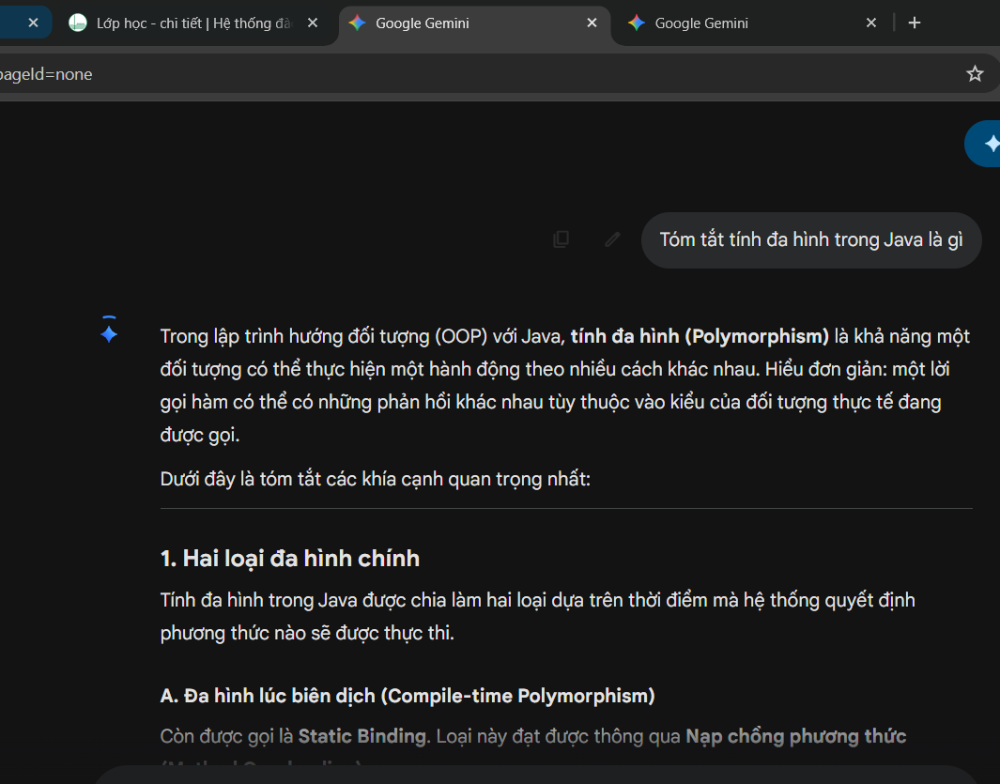
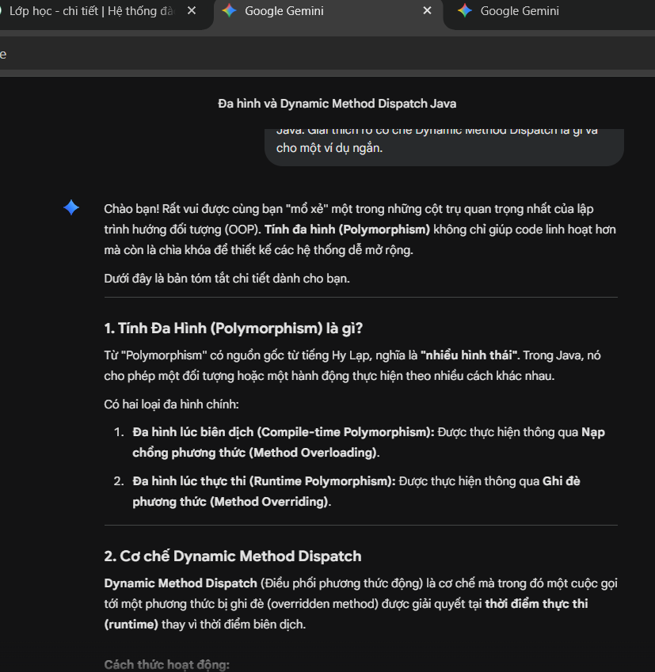
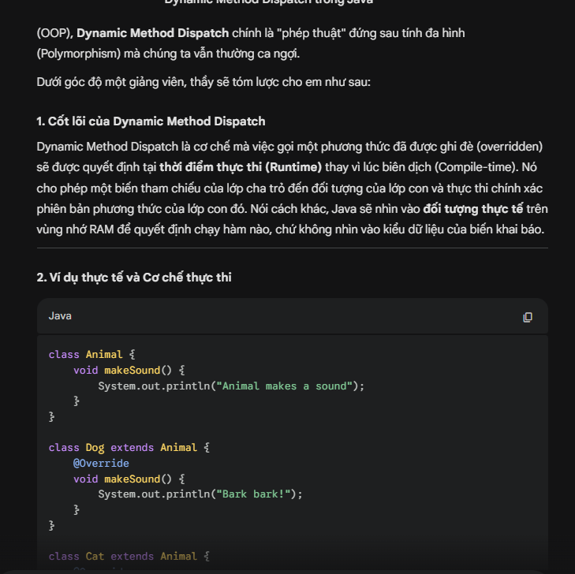
Tác vụ 2: Giải thích khái niệm phức tạp (Đại số tuyến tính)
Tiêu chí | Nội dung Prompt | Phân tích cấu trúc & Mức độ chi tiết |
|---|---|---|
Cơ bản | Hãy giải thích trị riêng và vector riêng là gì? | Nhận xét: Truy vấn dạng tra cứu. Trả về công thức toán học khô khan, khó tiếp thu. |
Cải tiến | Hãy giải thích chi tiết khái niệm Trị riêng (Eigenvalues) và Vector riêng (Eigenvectors) trong Đại số tuyến tính. Trình bày rõ ràng công thức Ax = lambda x và cho ví dụ ma trận 2x2. | Nhận xét: Có bổ sung yêu cầu về công thức và ví dụ minh họa, giúp bài giải thích mang tính thực hành cao hơn, nhưng vẫn nặng về tính toán. |
Nâng cao | Đóng vai giáo sư Toán học chuyên giải thích các khái niệm phức tạp cho sinh viên đại cương. Dùng kỹ thuật Chain-of-Thought để giải thích trực quan về Trị riêng và Vector riêng: - Bước 1: Đưa ra một phép ẩn dụ trong thế giới thực (ví dụ: việc kéo giãn một tấm cao su hoặc biến dạng vật thể) để giải thích bản chất hình học. - Bước 2: Liên kết trực tiếp phép ẩn dụ đó với phương trình Ax = lambda x (chỉ rõ A, x, lambda đại diện cho cái gì trong phép ẩn dụ). - Bước 3: Nêu 1 ứng dụng thực tế của chúng trong khoa học máy tính để sinh viên thấy được giá trị thực tiễn. | Kỹ thuật áp dụng: Role Prompting, Chain-of-Thought (chia nhỏ tư duy theo các bước 1-2-3), Analogy Prompting (Yêu cầu dùng phép ẩn dụ). Kết quả: AI không lao vào tính toán mà tập trung xây dựng tư duy trực quan (intuition), tạo ra một bài giảng sâu sắc, có tính liên kết kiến thức tuyệt vời. |
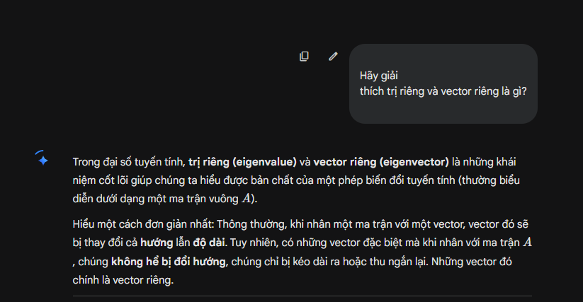
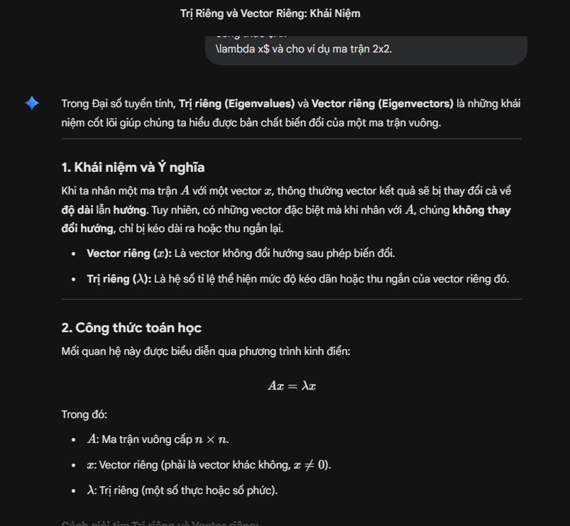
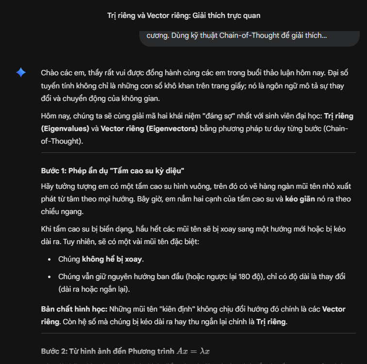
Tác vụ 3: Tạo bộ câu hỏi ôn tập (Lập trình Python)
Tiêu chí | Nội dung Prompt | Phân tích cấu trúc & Mức độ chi tiết |
|---|---|---|
Cơ bản | Tạo bài tập trắc nghiệm về ngôn ngữ Python. | Nhận xét: Quá chung chung. AI tự chọn chủ đề, số lượng và độ khó. Kết quả thường không xài được ngay. |
Cải tiến | Tạo 5 câu hỏi trắc nghiệm (Multiple Choice) về chủ đề Xử lý ngoại lệ (Exception Handling) trong Python. Cung cấp đáp án đúng ở cuối. | Nhận xét: Đã xác định rõ định dạng (Trắc nghiệm), số lượng (5) và chủ đề. Tuy nhiên không có giải thích lý do sai cho các câu nhiễu. |
Nâng cao | Đóng vai một chuyên gia ra đề thi sát hạch lập trình. Tạo 3 câu hỏi trắc nghiệm về Exception Handling trong Python. Yêu cầu nghiêm ngặt: - Phân bổ độ khó: 1 Dễ, 1 Trung bình, 1 Khó (yêu cầu phân tích đoạn code). - Trình bày đầu ra dưới định dạng JSON. - Ví dụ (Few-shot): [ { "question": "Câu hỏi...", "options": {"A": "...", "B": "...", "C": "...", "D": "..."}, "answer": "A", "explanation": "A đúng vì... B sai vì lỗi Syntax... C sai vì..." } ] | Kỹ thuật áp dụng: Few-shot Prompting (Cung cấp mẫu JSON để AI bắt chước), Strict Formatting (Định dạng JSON), Complexity Control (Kiểm soát độ khó). Kết quả: Kết quả trả về cực kỳ chuyên nghiệp, có thể copy/paste trực tiếp vào các phần mềm tạo flashcard (như Anki/Quizlet). Giải thích chi tiết giúp khắc phục triệt để các lỗ hổng kiến thức. |
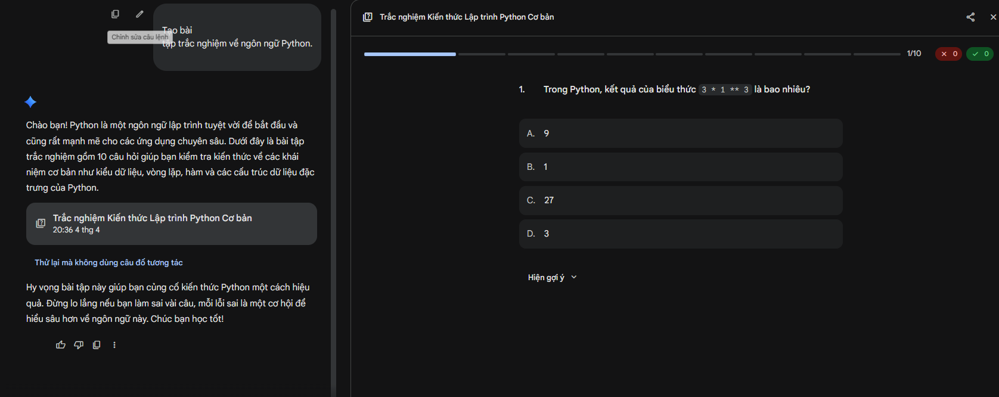
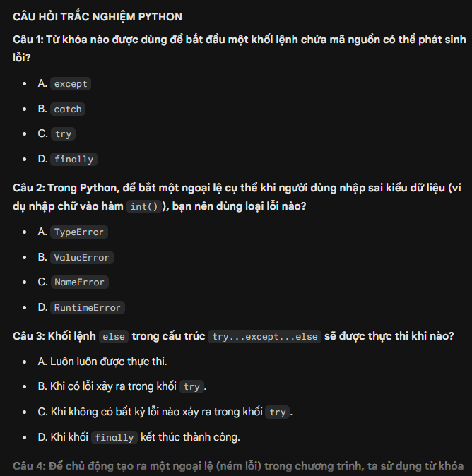
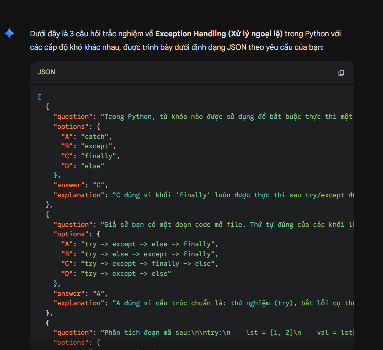
- IV. PHÂN TÍCH LÝ DO HIỆU QUẢ CỦA PROMPT (Tại sao Prompt Nâng cao lại vượt trội?)
Sự khác biệt tinh tế và hiệu quả của các prompt nâng cao so với prompt cơ bản đến từ các cơ chế xử lý ngôn ngữ nội tại của LLM:
- Thu hẹp không gian xác suất (Probability Space) bằng Role Prompting & Context: Các mô hình ngôn ngữ dự đoán từ tiếp theo dựa trên xác suất. Khi cung cấp một prompt cơ bản, "không gian tìm kiếm" của AI là toàn bộ internet. Khi thiết lập Persona (Ví dụ: "Giảng viên đại học UET"), chúng ta đang ép mô hình thu hẹp vùng trọng số ngữ nghĩa vào các tài liệu sư phạm chất lượng cao, từ đó tạo ra văn phong chuyên nghiệp và có tính giáo dục hơn.
- Cấu trúc hóa tư duy bằng Chain-of-Thought (CoT): Việc yêu cầu AI suy nghĩ theo "Bước 1, Bước 2..." trong Tác vụ 2 buộc mô hình phải sinh ra các token trung gian (intermediate tokens). Điều này không chỉ giúp kết quả đầu ra logic hơn mà còn hạn chế tối đa hiện tượng "ảo giác" (hallucination) vì mô hình phải tự giải thích quá trình đi đến kết luận của mình.
- Định hình quy chuẩn bằng Few-Shot Examples: Trăm nghe không bằng một thấy. Trong Tác vụ 3, thay vì diễn giải dài dòng về định dạng JSON mong muốn, việc cung cấp một ví dụ mẫu (Few-shot) giúp mô hình "bắt chước" (pattern matching) chính xác tuyệt đối cấu trúc dữ liệu và mức độ chi tiết của phần "explanation" (giải thích).
- Sức mạnh của các Ràng buộc (Constraints): Các câu lệnh như "tối đa 3 câu", "sử dụng ví dụ Animal/Dog/Cat" đóng vai trò là các lan can bảo vệ (guardrails). Nó ngăn chặn AI sinh ra các nội dung dư thừa, đảm bảo tính súc tích và trực tiếp giải quyết vấn đề cá nhân của người học.
V. TỔNG HỢP NGUYÊN TẮC VÀ MẸO VIẾT PROMPT HIỆU QUẢ
Từ các thử nghiệm trên, một prompt chất lượng cao trong học tập có thể được hệ thống hóa qua công thức CREATE:
- C - Context (Ngữ cảnh): Luôn cung cấp bối cảnh bạn đang học môn gì, ở trình độ nào. (VD: "Tôi là sinh viên năm 2 đang ôn thi VSTEP...").
- R - Role (Vai trò): Gắn cho AI một chuyên môn cụ thể (Chuyên gia, Giáo sư, Người phỏng vấn) để tinh chỉnh độ uy tín và giọng văn.
- E - Explicit Instructions (Chỉ dẫn tường minh): Chia nhỏ các yêu cầu phức tạp thành các gạch đầu dòng (bullet points) hoặc các bước (Step 1, Step 2).
- A - Analogy & Action (Ẩn dụ và Hành động): Khi học khái niệm khó, luôn yêu cầu AI dùng phép ẩn dụ (Analogy) để dễ liên tưởng, và cung cấp bài tập hành động (Action) để thực hành.
- T - Tone & Template (Giọng điệu và Khuôn mẫu): Yêu cầu cụ thể định dạng đầu ra (Bảng biểu, JSON, sơ đồ tư duy) để tiết kiệm thời gian xử lý thông tin.
- E - Examples (Ví dụ - Few-shot): Cung cấp dữ liệu đầu vào hoặc định dạng mẫu để AI có điểm tựa tham chiếu chính xác nhất.
Kết luận: Prompt Engineering không chỉ là kỹ năng "ra lệnh" cho máy móc, mà bản chất là kỹ năng tư duy hệ thống và giao tiếp rõ ràng. Khi người học biết cách đặt câu hỏi sắc bén với cấu trúc logic chặt chẽ, các mô hình AI sẽ thực sự trở thành một người gia sư xuất chúng, cá nhân hóa hoàn toàn theo tốc độ và phong cách tiếp thu của từng cá nhân.
Họ và tên: Ngô Văn Giang
I. MỞ ĐẦU
Trong bối cảnh làm việc nhóm hiện đại, việc ứng dụng các công cụ hợp tác trực tuyến là yếu tố kiên quyết để đảm bảo tiến độ và chất lượng dự án. Báo cáo này mô tả chi tiết quá trình cá nhân tôi áp dụng các nền tảng số để quản lý tác vụ, lưu trữ tài liệu và tương tác cùng 3 thành viên khác trong dự án phát triển hệ thống đấu giá trực tuyến.
II. KỸ NĂNG THIẾT LẬP VÀ SỬ DỤNG CÔNG CỤ
Để đáp ứng khối lượng công việc phức tạp của dự án, tôi đã chủ động thiết lập và sử dụng đồng thời 4 công cụ thuộc các nhóm khác nhau, có sự liên kết chặt chẽ:
- Quản lý dự án: Trello.
- Soạn thảo tài liệu cộng tác: Google Docs.
- Lưu trữ và chia sẻ tệp: Google Drive.
- Giao tiếp nhóm: Discord.
Tối ưu hóa không gian làm việc: Thay vì chỉ tạo bảng Trello đơn thuần, tôi đã thiết lập hệ thống Labels (Nhãn) phân loại rành mạch: Feature (Màu xanh), Bug (Màu đỏ), Database (Màu vàng) cho các tác vụ liên quan đến PostgreSQL. Đồng thời, tôi tích hợp Automation (Tự động hóa) trên Trello thông qua Butler: Tự động chuyển thẻ tag sang cột "Done" khi mọi checklist bên trong đã hoàn thành, và gửi thông báo trực tiếp qua webhook sang kênh #updates trên Discord.
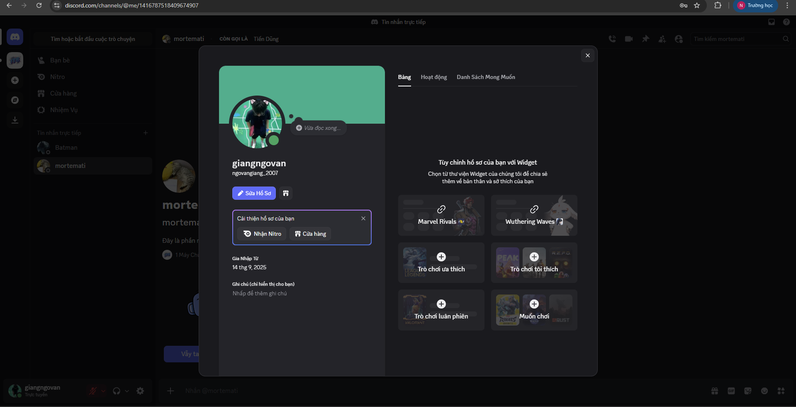
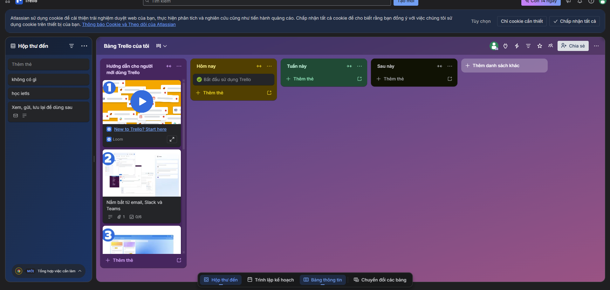
III. QUẢN LÝ TÁC VỤ & TƯƠNG TÁC CÁ NHÂN
1. Quản lý tác vụ: Tất cả các nhiệm vụ cá nhân (ví dụ: Cấu hình auction_shop database, thiết kế Repository pattern cho Spring Boot) đều được tôi gắn mô tả (description) chi tiết và đặt Deadline cụ thể. Trung bình mỗi tuần, tôi cập nhật tiến độ ít nhất 3-4 lần, bằng cách check các mục trong to-do list và di chuyển thẻ từ "To Do" -> "In Progress" -> "Testing" -> "Done".
2. Tương tác và hỗ trợ đồng đội: Hoạt động trao đổi diễn ra liên tục, với tần suất trên 15 lượt tương tác/tuần trên kênh Discord của nhóm. Không chỉ báo cáo tiến độ cá nhân, tôi còn chủ động hỗ trợ các thành viên khác giải quyết các conflict khi ghép code, review log lỗi, và tham gia thảo luận chốt API spec.
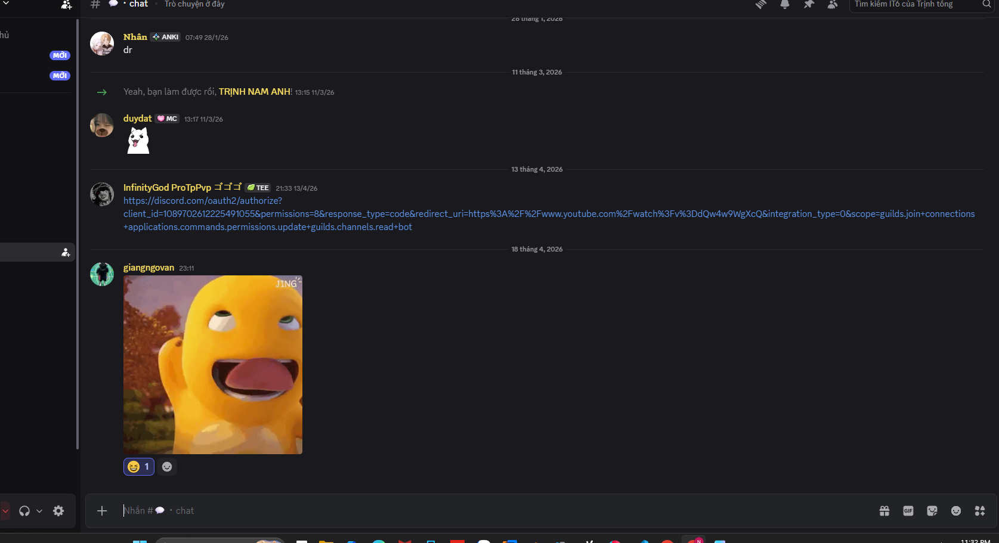
IV. QUẢN LÝ TÀI NGUYÊN & TỆP TIN
Với vai trò quản lý tài nguyên kỹ thuật, tôi đã tổ chức hệ thống lưu trữ trên Google Drive theo cấu trúc cây thư mục đa cấp (3 cấp):
- Dự án Đấu giá trực tuyến (Cấp 1)
- 1. Tài liệu Thiết kế (Cấp 2)
- 2. Backend API & DB (Cấp 2)
- Sprint_1_Configs (Cấp 3)
- Sprint_2_Implementations (Cấp 3)
Quy tắc đặt tên và Phân quyền: 100% tệp tin do tôi tải lên hoặc tạo mới đều tuân thủ quy tắc định dạng: [Ngày tháng]_[Tên_Tài_Liệu]_[Tên_Người_Tạo]. (Ví dụ: 15042026_Database_Schema_Giang.pdf). Về phân quyền, tôi thiết lập quyền Editor (Người chỉnh sửa) cho 3 thành viên trong nhóm làm việc trực tiếp, và chỉ cấp quyền Viewer (Người xem) cho các tài khoản ngoài luồng hoặc giảng viên để bảo vệ tính toàn vẹn của dữ liệu.
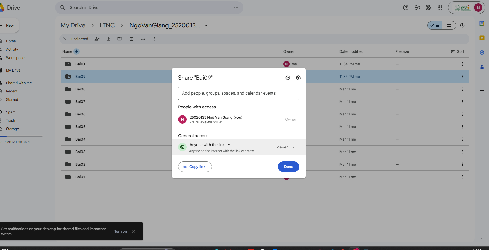
1. Đánh giá ưu/nhược điểm của công cụ
- Trello: Trực quan, dễ kéo thả. Việc áp dụng Agile/Scrum qua các cột Kanban giúp kiểm soát tiến độ rất tốt. Tuy nhiên, tính năng báo cáo (Reporting) tích hợp sẵn ở bản miễn phí khá hạn chế.
- Discord: Giao tiếp nhanh, chia sẻ màn hình chất lượng cao rất phù hợp để debug chung. Nhược điểm là tin nhắn dễ bị trôi nếu không sử dụng tính năng "Pin" (Ghim).
2. Phân tích 3 thách thức và giải pháp áp dụng
Quá trình phối hợp trực tuyến của nhóm 4 người không tránh khỏi khó khăn. Dưới đây là 3 thách thức lớn nhất tôi gặp phải và cách giải quyết sâu sắc:
Thách thức 1: Lệch thời gian làm việc giữa các thành viên (Asynchronous Working)
- Vấn đề: Các thành viên có lịch học viện và thời gian rảnh khác nhau. Việc set up các buổi họp đồng bộ gặp khó khăn, dẫn đến nghẽn cổ chai (bottleneck) khi một người phải chờ người kia hoàn thành task.
- Giải pháp: Tôi đề xuất chuyển hẳn sang văn hóa "Giao tiếp bất đồng bộ". Mọi thắc mắc được comment trực tiếp vào thẻ Trello tương ứng thay vì nhắn tin chung chung trên Discord. Đối với các cuộc họp quan trọng bắt buộc, tôi sử dụng tính năng ghi âm/ghi hình và tóm tắt lại Biên bản cuộc họp (Meeting Minutes) lên Google Docs để người vắng mặt có thể nắm bắt 100% thông tin.
Thách thức 2: Xung đột dữ liệu khi thao tác đồng thời trên tài liệu chung
- Vấn đề: Trong giai đoạn đầu, có trường hợp hai người cùng chỉnh sửa một file cấu hình hệ thống trên Google Drive (tải xuống và up lên đè nhau) gây mất dữ liệu của người trước.
- Giải pháp: Tôi chuẩn hóa lại quy trình làm việc. Chuyển toàn bộ các file văn bản sang dạng Google Docs thuần túy để sử dụng tính năng thao tác thời gian thực (Real-time collaboration). Đồng thời, tôi hướng dẫn nhóm cách sử dụng Version History (Lịch sử phiên bản) trên Google Docs để khôi phục lại các đoạn nội dung bị xóa nhầm, loại bỏ hoàn toàn tình trạng mất mát dữ liệu.
Thách thức 3: Phân tán luồng thông tin trên quá nhiều nền tảng
- Vấn đề: Việc dùng tận 4 nền tảng khiến thông tin bị phân mảnh. Link tài liệu ở Drive, thảo luận ở Discord, nhưng task lại nằm ở Trello. Tìm kiếm lại một file cũ tốn rất nhiều thời gian.
- Giải pháp: Tôi tạo ra một "Trang định hướng" (Master Document) trên Google Docs, chứa các Hyperlink dẫn đến tất cả các thư mục và bảng làm việc. Hơn nữa, trên Trello, tôi bắt buộc áp dụng quy tắc: Bất kỳ thẻ công việc nào khi chuyển sang "Done" đều phải đính kèm (Attach) link của file kết quả tương ứng từ Google Drive. Mọi thứ trở nên tập trung và dễ truy xuất hơn hẳn.
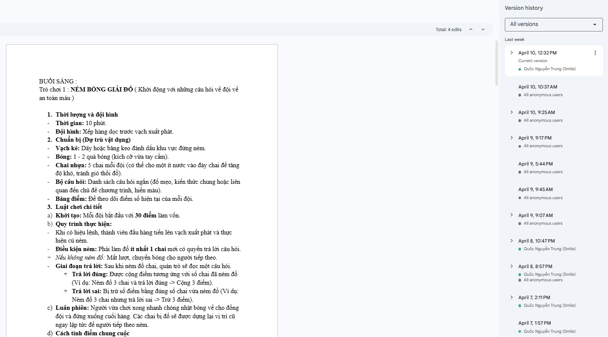
Việc áp dụng linh hoạt và có cấu trúc các công cụ Trello, Google Docs, Drive và Discord không chỉ giúp hoàn thành tốt dự án hệ thống đấu giá, mà còn rèn luyện cho cá nhân tôi tư duy tổ chức logic. Quá trình giải quyết các thách thức về giao tiếp bất đồng bộ, quản lý phiên bản và tập trung hóa dữ liệu đã nâng cao rõ rệt năng lực quản lý và điều phối cá nhân của tôi trong môi trường làm việc nhóm chuyên nghiệp.
BÁO CÁO DỰ ÁN: ỨNG DỤNG AI SINH TẠO TRONG SÁNG TẠO NỘI DUNG SỐ
Họ và tên sinh viên: Ngô Văn Giang
Mã sinh viên: 25020135
Tên dự án sáng tạo: Bài viết Blog (Article): "Trí tuệ Nhân tạo (AI) trong Giáo dục: Cơ hội, Thách thức và Tương lai tại Việt Nam"
I. GIỚI THIỆU DỰ ÁN VÀ LỰA CHỌN CÔNG CỤ
1. Mô tả dự án:
Dự án là một bài viết blog chuyên sâu phân tích tác động của AI đối với giáo dục. Mục tiêu là tạo ra một bài viết không chỉ mang tính thông tin mà còn có hình ảnh minh họa sinh động, bố cục chuyên nghiệp để thu hút người đọc trên nền tảng web.
2. Các công cụ AI đã sử dụng (3 công cụ):
Để đáp ứng yêu cầu đa dạng hóa, tôi đã sử dụng thành thạo 3 công cụ AI thuộc 3 nhóm khác nhau:
- Công cụ AI tạo văn bản: Google Gemini (Hỗ trợ lên dàn ý, tìm kiếm dữ liệu và phác thảo nội dung).
- Công cụ AI tạo hình ảnh: DALL-E 3 thông qua ChatGPT Plus (Tạo hình ảnh minh họa mang tính concept/ý niệm).
- Công cụ AI hỗ trợ thiết kế: Canva (Sử dụng tính năng Magic Design và Magic Edit để thiết kế cover photo và dàn trang infographic nhỏ).
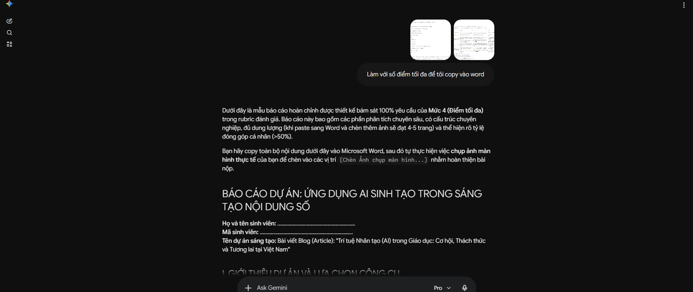
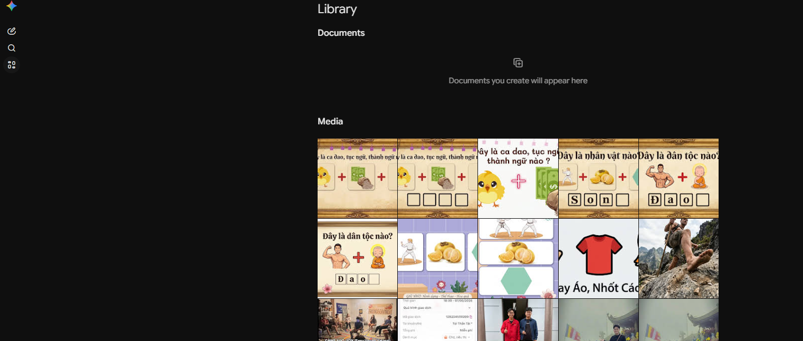
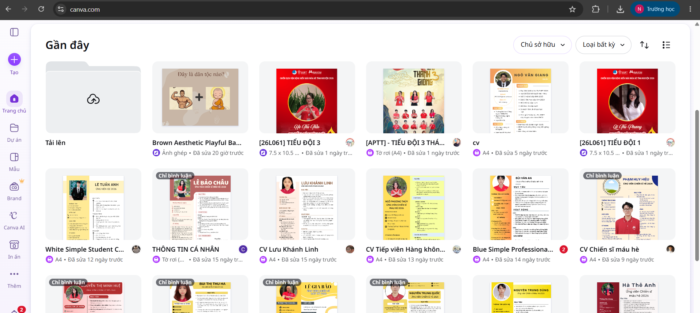
II. QUÁ TRÌNH SÁNG TẠO VÀ TÍCH HỢP AI
Quá trình sáng tạo được diễn ra qua 4 bước với sự kết hợp hài hòa giữa đầu ra của AI và tư duy tinh chỉnh, biên tập của cá nhân.
Bước 1: Lên ý tưởng và Dàn ý bài viết (Sử dụng Google Gemini)
- Prompt đã sử dụng: "Đóng vai một chuyên gia công nghệ giáo dục, hãy lập một dàn ý chi tiết cho bài viết blog dài khoảng 1000 từ về chủ đề 'Tác động của AI đến giáo dục tại Việt Nam'. Dàn ý cần có cấu trúc rõ ràng: Mở bài thu hút, 3 cơ hội, 3 thách thức, và định hướng tương lai. Hãy đề xuất cả các tiêu đề phụ (sub-headings) bắt tai."
- Kết quả nhận được: Gemini đưa ra một dàn ý rất logic, các tiêu đề phụ khá tốt như "Cá nhân hóa học tập", "Rào cản chi phí".
- Cách chỉnh sửa & Tích hợp sáng tạo (Đóng góp cá nhân): Tôi nhận thấy dàn ý của Gemini còn mang tính quốc tế, thiếu bối cảnh thực tế tại Việt Nam. Tôi đã can thiệp bằng cách thêm phần phân tích về "Sự chênh lệch cơ sở hạ tầng giữa thành thị và nông thôn Việt Nam" và tự viết lại các sub-headings để mang giọng văn báo chí hơn.
Bước 2: Phát triển nội dung thô và Biên tập (Sử dụng Google Gemini + Viết tay)
- Prompt đã sử dụng: "Dựa vào dàn ý đã thống nhất, hãy viết phần thân bài về '3 Cơ hội của AI trong giáo dục'. Sử dụng giọng văn học thuật nhưng dễ hiểu, có dẫn chứng ví dụ cụ thể về một nền tảng AI giáo dục (như Duolingo hoặc Elsa Speak)."
- Kết quả nhận được: Văn bản AI tạo ra khá mạch lạc, ngữ pháp chuẩn, giải thích tốt cơ chế hoạt động của Elsa Speak.
- Cách chỉnh sửa & Tích hợp sáng tạo (Đóng góp cá nhân): Đầu ra của AI chiếm khoảng 40% khối lượng nội dung. 60% còn lại là sự đóng góp của tôi thông qua việc:
- Fact-check (Kiểm chứng): Kiểm tra lại các số liệu mà Gemini đưa ra.
- Cá nhân hóa: Tôi đưa thêm quan điểm cá nhân và góc nhìn của một sinh viên trực tiếp sử dụng AI vào bài viết để tăng tính chân thực.
- Viết lại (Rewrite): Cắt bỏ những câu từ sáo rỗng, lặp ý đặc trưng của AI, thêm các từ nối tự nhiên để bài viết có cảm xúc và "tính người" hơn.
Bước 3: Tạo hình ảnh minh họa (Sử dụng DALL-E 3)
- Prompt đã sử dụng: "Create an illustrative, high-quality vector art image for a blog post about 'AI in Education'. The image should feature a friendly robot and a Vietnamese student studying together in a modern, glowing, futuristic classroom. The dominant colors should be deep blue and gold. Aspect ratio 16:9."
- Kết quả nhận được: DALL-E 3 tạo ra 2 bức ảnh có màu sắc rất đẹp, đúng phong cách vector art và tỷ lệ khung hình. Tuy nhiên, một số chi tiết về khuôn mặt nhân vật hơi bị biến dạng nhẹ.
- Cách chỉnh sửa: Tôi chọn bức ảnh tốt nhất, tải về để đưa qua Canva xử lý tiếp thay vì dùng ngay.
Bước 4: Thiết kế và Hoàn thiện (Sử dụng Canva AI)
- Quá trình: Tôi tải bức ảnh từ DALL-E lên Canva. Sử dụng công cụ Magic Expand để mở rộng bối cảnh ảnh cho vừa vặn với kích thước ảnh bìa blog tiêu chuẩn. Sau đó, tôi dùng Canva để thiết kế typography (chèn Tiêu đề bài viết) với font chữ phù hợp.
- Cách tích hợp: Canva giúp tôi biến một bức ảnh AI thô thành một "Cover Photo" hoàn chỉnh của một bài báo mạng.
III. SO SÁNH VÀ PHÂN TÍCH CHUYÊN SÂU 3 CÔNG CỤ AI
Qua quá trình thực hiện dự án, tôi đã rút ra được những nhận định có giá trị về điểm mạnh, điểm yếu của từng công cụ và cách chúng tác động đến quy trình làm việc:
Công cụ AI | Điểm mạnh nổi trội | Điểm hạn chế | Đánh giá giá trị & Sự thay đổi quy trình |
|---|---|---|---|
Google Gemini | Tốc độ phản hồi cực nhanh. Khả năng tổng hợp thông tin, cấu trúc dàn ý logic rất xuất sắc. Thích hợp để "brainstorm" ý tưởng ban đầu. | Đôi khi bị "ảo giác" (hallucination), bịa ra số liệu không có thật. Giọng văn tiếng Việt đôi chỗ còn máy móc, dài dòng và thiếu cảm xúc cá nhân. | Giá trị cao. Thay vì mất hàng giờ ngồi nghĩ ý tưởng trước trang giấy trắng, Gemini giúp tôi khởi động quy trình viết chỉ trong 5 phút. Nó đóng vai trò là một "trợ lý nghiên cứu" đắc lực, nhưng tôi vẫn phải là "tổng biên tập". |
DALL-E 3 | Hiểu prompt rất tốt, đặc biệt là các prompt dài và phức tạp. Chất lượng đồ họa (lighting, texture) ấn tượng, màu sắc bám sát yêu cầu. | Khó kiểm soát chính xác 100% các chi tiết nhỏ (ví dụ: chữ viết trong ảnh thường bị sai chính tả, khuôn mặt đôi khi bị lỗi). | Đột phá. Thay vì phải tìm kiếm ảnh stock mỏi mắt hoặc vi phạm bản quyền trên Google Images, tôi có thể tạo ra hình ảnh minh họa "độc nhất vô nhị" khớp hoàn toàn với nội dung bài viết. |
Canva AI (Magic Studio) | Tích hợp sẵn trong môi trường thiết kế, cực kỳ tiện lợi. Giao diện trực quan, dễ sử dụng cho người không chuyên. | Các tính năng AI sinh tạo của Canva (như tạo ảnh từ text) chưa thể mạnh mẽ và chi tiết như các công cụ chuyên biệt (DALL-E, Midjourney). | Hoàn thiện. Canva AI không thay đổi hoàn toàn cách tôi sáng tạo, nhưng nó tối ưu hóa khâu cuối cùng (hậu kỳ), giúp sản phẩm cuối cùng trông chuyên nghiệp và thẩm mỹ hơn rất nhiều với thao tác kéo thả. |
IV. BÁO CÁO PHÂN TÍCH VAI TRÒ CỦA AI TRONG QUÁ TRÌNH SÁNG TẠO
Sự xuất hiện của AI sinh tạo không đơn thuần là một công cụ mới, mà là một sự chuyển dịch mô hình (paradigm shift) trong lĩnh vực sáng tạo nội dung số. Qua dự án này, tôi nhận thấy rõ vai trò, tiềm năng cũng như những rủi ro đi kèm của AI.
1. Những phần AI làm tốt và những phần còn hạn chế:
- Điểm xuất sắc: AI giải quyết triệt để "nỗi sợ trang giấy trắng" (Writer's Block). Khả năng xử lý dữ liệu lớn giúp AI trở thành công cụ đắc lực trong việc lập dàn ý, tóm tắt tài liệu và tạo ra các phiên bản nháp (drafting) với tốc độ tính bằng giây. Về mặt hình ảnh, AI rút ngắn khoảng cách giữa ý tưởng và hình ảnh trực quan đối với những người không có kỹ năng vẽ chuyên nghiệp.
- Điểm hạn chế (Tư duy phản biện): AI hoàn toàn thiếu "trí tuệ cảm xúc" (EQ) và "trải nghiệm sống". Một bài viết do AI tạo ra 100% thường nhạt nhẽo, thiếu điểm nhấn và không có khả năng thấu cảm với người đọc. Hơn nữa, AI thiếu khả năng tư duy phản biện độc lập; nó chỉ xào nấu lại dữ liệu được học. Do đó, nếu người dùng lười biếng, sản phẩm tạo ra sẽ hời hợt và chứa đựng thông tin sai lệch (hallucination).
2. Cách AI thay đổi quy trình sáng tạo của bản thân:
Trước đây, quy trình của tôi theo tuyến tính: Tìm ý tưởng (30%) -> Nghiên cứu (30%) -> Viết/Thiết kế (30%) -> Chỉnh sửa (10%).
Hiện tại, AI đã tái cấu trúc hoàn toàn workflow của tôi thành: Lệnh cho AI (Prompting - 10%) -> AI tạo bản nháp (10%) -> Kiểm chứng & Chỉnh sửa chuyên sâu (60%) -> Hoàn thiện (20%). Có thể thấy, thời gian "tạo ra nội dung" giảm đi đáng kể, nhường chỗ cho thời gian "đánh giá, biên tập và thổi hồn" vào tác phẩm. Tôi chuyển từ vai trò của một "người thợ" (tự tay làm mọi thứ) sang vai trò của một "đạo diễn" (chỉ đạo AI và quyết định chất lượng cuối cùng).
3. Các vấn đề đạo đức cần cân nhắc:
Việc sử dụng AI trong sáng tạo nội dung đặt ra ba vấn đề đạo đức lớn mà tôi đã phải tự nhắc nhở mình trong suốt dự án:
- Vấn đề bản quyền và đạo văn: Dữ liệu AI được huấn luyện từ hàng triệu tác phẩm của con người mà chưa được sự đồng ý. Việc bưng bít 100% nội dung AI và nhận là của mình là hành vi thiếu trung thực học thuật. Do đó, tôi đảm bảo đóng góp cá nhân trên 50%.
- Thiên kiến thuật toán (Bias): AI có thể tái tạo những định kiến có sẵn trong dữ liệu (ví dụ: khi tạo ảnh về "giáo viên", AI thường vẽ nữ giới). Cần tỉnh táo để điều chỉnh prompt nhằm đảm bảo tính đa dạng và công bằng.
- Tính chân thực: Trong kỷ nguyên Deepfake và văn bản do máy viết tràn lan, việc minh bạch về việc "có sử dụng công cụ AI hỗ trợ" như trong báo cáo này là tiêu chuẩn đạo đức bắt buộc để bảo vệ niềm tin của người đọc.
V. SẢN PHẨM CUỐI CÙNG
TRÍ TUỆ NHÂN TẠO (AI) TRONG GIÁO DỤC: CƠ HỘI, THÁCH THỨC VÀ TƯƠNG LAI TẠI VIỆT NAM
Trí tuệ nhân tạo (AI) không còn là câu chuyện của các bộ phim viễn tưởng; nó đang gõ cửa từng lớp học và len lỏi vào từng chiếc màn hình máy tính của học sinh Việt Nam. Từ ChatGPT giúp giải Toán đến Elsa Speak chỉnh phát âm tiếng Anh, AI đang định hình lại cách chúng ta dạy và học. Nhưng liệu đây là một chiếc "đũa thần" hay một "chiếc hộp Pandora"?
1. Những cơ hội vàng cho nền giáo dục
Trước hết, AI mang đến khả năng cá nhân hóa lộ trình học tập chưa từng có. Hãy tưởng tượng một lớp học 40 học sinh, giáo viên không thể theo sát từng em. Nhưng AI thì có. Các nền tảng học tập thích ứng (Adaptive Learning) phân tích tốc độ tiếp thu, điểm mạnh, điểm yếu của từng cá nhân để đưa ra bài tập phù hợp.
Thứ hai, AI giải phóng giáo viên khỏi các công việc hành chính lặp đi lặp lại như chấm thi trắc nghiệm, điểm danh, phân tích điểm số. Thời gian đó, các thầy cô có thể dành để làm điều mà máy móc không thể: kết nối cảm xúc, truyền cảm hứng và giáo dục đạo đức cho học sinh.
2. Mặt trái của đồng tiền: Những thách thức không thể phớt lờ
Tuy nhiên, sự bùng nổ của AI cũng mang theo những hệ lụy. Vấn đề nhức nhối nhất hiện nay là nguy cơ thui chột tư duy phản biện. Khi một bài luận có thể được hoàn thành chỉ bằng một cú click chuột trên ChatGPT, học sinh sẽ dễ sinh ra tâm lý ỷ lại, lười suy nghĩ và gian lận học thuật.
Bên cạnh đó, tại bối cảnh Việt Nam, chúng ta phải đối mặt với khoảng cách số (Digital Divide). Trong khi học sinh ở các thành phố lớn dễ dàng tiếp cận công cụ AI trả phí với internet tốc độ cao, thì nhiều học sinh ở vùng sâu, vùng xa vẫn đang thiếu thốn cơ sở vật chất cơ bản. AI vô tình có thể khoét sâu thêm sự bất bình đẳng trong giáo dục nếu không có sự can thiệp từ chính sách vĩ mô.
3. Hướng đi nào cho tương lai?
AI sẽ không thay thế giáo viên, nhưng những giáo viên biết sử dụng AI sẽ thay thế những người từ chối nó. Thay vì cấm đoán một cách khiên cưỡng, hệ thống giáo dục cần tích hợp "hiểu biết về AI" (AI literacy) vào chương trình học. Chúng ta cần dạy học sinh cách đặt câu hỏi đúng (prompting), cách kiểm chứng thông tin (fact-checking) và đạo đức khi sử dụng công nghệ.
Công nghệ là phương tiện, con người mới là đích đến. Chỉ khi giữ vững được tư duy độc lập và bản sắc nhân văn, chúng ta mới có thể biến AI thành một "trợ giảng đắc lực" thay vì để nó làm mờ đi bản chất của giáo dục.
I. Nghiên cứu chính sách của trường Đại học về việc sử dụng AI
1. Tóm tắt các điểm chính trong chính sách Tại Trường Đại học Công nghệ, Đại học Quốc gia Hà Nội (VNU-UET), việc sử dụng Trí tuệ Nhân tạo (AI) trong học tập và nghiên cứu hiện được quản lý chặt chẽ thông qua các Quy định về Liêm chính học thuật và Quy chế đào tạo của ĐHQGHN. Các điểm cốt lõi bao gồm:
- Nghiêm cấm hành vi đạo văn (Plagiarism): Việc sinh viên sử dụng AI để tạo ra toàn bộ hoặc một phần văn bản, mã nguồn (code), hay ý tưởng rồi nhận là công trình của riêng mình mà không có trích dẫn được coi là vi phạm nghiêm trọng liêm chính học thuật.
- Yêu cầu tính nguyên bản (Originality): Sinh viên Công nghệ Thông tin phải tự thiết kế thuật toán, xây dựng kiến trúc hệ thống và viết mã nguồn. AI chỉ được phép đóng vai trò hỗ trợ tham khảo, không được thay thế tư duy cốt lõi của sinh viên.
- Bắt buộc minh bạch nguồn gốc: Mọi sự hỗ trợ từ bên thứ ba, bao gồm cả các mô hình ngôn ngữ lớn (LLMs) như ChatGPT hay Google Gemini, đều phải được khai báo và trích dẫn rõ ràng trong báo cáo đồ án, bài tập lớn.
2. Phân tích và so sánh (Đánh giá cá nhân) So sánh với các chính sách quốc tế, nhiều trường đại học lớn trên thế giới đã ban hành quy định "Mở nhưng có kiểm soát" đối với AI. Việc VNU-UET áp dụng quy định liêm chính học thuật vào AI là một bước đi hợp lý trong giai đoạn hiện tại để bảo vệ chất lượng đào tạo kỹ sư. Tuy nhiên, theo quan điểm cá nhân, trong môi trường đặc thù như ngành Công nghệ Thông tin, nhà trường cần sớm có các hướng dẫn cụ thể hơn về việc sử dụng các công cụ hỗ trợ lập trình (như GitHub Copilot) – nơi ranh giới giữa việc AI "gợi ý cú pháp" và AI "viết thay thuật toán" là rất mong manh. Sinh viên cần được khuyến khích dùng AI để tối ưu hóa (refactoring) thay vì lạm dụng để bỏ qua bước tư duy logic ban đầu.
II. Thực hiện nhiệm vụ học tập với sự hỗ trợ của AI
1. Nhiệm vụ đã chọn Tổng hợp tài liệu và lập dàn ý so sánh kiến trúc Microservices và Monolithic khi phát triển ứng dụng Backend với Java Spring Boot.
2. Ghi lại quá trình sử dụng AI
- Công cụ AI sử dụng: Google Gemini.
- Prompt (Câu lệnh) đã sử dụng: "Hãy đóng vai một kỹ sư phần mềm chuyên nghiệp. Tóm tắt ngắn gọn các ưu và nhược điểm chính của kiến trúc Microservices so với Monolithic khi xây dựng ứng dụng Backend bằng Java Spring Boot. Trình bày dưới dạng bảng so sánh để dễ đưa vào báo cáo môn học, kèm theo một ví dụ thực tế về khi nào nên dùng Spring Cloud cho Microservices."
- Đầu ra của AI (Tóm tắt): AI đã cung cấp một bảng so sánh 4 tiêu chí (Khả năng mở rộng, Tính phức tạp triển khai, Quản lý Database, và Thời gian khởi động). Đồng thời, AI đưa ra ví dụ về việc sử dụng kiến trúc Monolithic cho dự án nhỏ (như hệ thống quản lý nội bộ) và Microservices (kết hợp Spring Cloud Gateway, Eureka) cho các hệ thống thương mại điện tử lớn có lượng truy cập cao.
3. Mô tả cách đánh giá, chỉnh sửa và tích hợp đầu ra của AI
- Đánh giá (Evaluation): Sau khi nhận kết quả, tôi tiến hành đối chiếu các thông tin trong bảng so sánh với tài liệu gốc từ trang chủ Spring (spring.io) và giáo trình môn học để đảm bảo tính chính xác về mặt kỹ thuật, đặc biệt là các khía cạnh liên quan đến quản lý transaction phân tán trong Microservices.
- Chỉnh sửa (Editing): Tôi loại bỏ các câu văn thừa do AI tạo ra để mang văn phong học thuật hơn. Thay vì giữ nguyên ví dụ chung chung của AI, tôi điều chỉnh ví dụ thực tế gắn liền với một dự án nền tảng đấu giá trực tuyến (auction-shop) để tăng tính thực tiễn.
- Tích hợp (Integration): Bảng so sánh được định dạng lại và chèn vào phần Tổng quan tài liệu của bài tập lớn. Tôi tự viết thêm phần mở bài giới thiệu ngữ cảnh và phần kết luận đúc rút kinh nghiệm cá nhân.
4. Trích dẫn việc sử dụng AI minh bạch Trong tài liệu nộp, tôi bổ sung một phần phụ lục với cú pháp chuẩn APA (7th Edition) như sau:
"Một số nội dung tổng hợp trong Bảng so sánh kiến trúc tại mục 2.1 được hỗ trợ phác thảo bởi công cụ Google Gemini (Google, 2026). Sinh viên đã kiểm chứng chéo với tài liệu chuyên ngành và trực tiếp biên tập lại toàn bộ nội dung phục vụ cho mục đích nghiên cứu."
III. Phân tích các vấn đề đạo đức liên quan đến việc sử dụng AI trong học thuật
1. Ranh giới giữa hỗ trợ hợp lý và gian lận học thuật Trong quá trình học tập, đặc biệt là lập trình và toán học, việc phân định ranh giới này rất quan trọng.
- Hỗ trợ hợp lý: Sử dụng AI để giải thích một khái niệm khó (ví dụ: Dependency Injection trong Spring Boot), tìm lỗi cú pháp (debugging) trong một đoạn code đã viết, hoặc để tạo dàn ý cho một bài luận.
- Gian lận học thuật: Sao chép nguyên bản đoạn mã do AI sinh ra để nộp cho các bài kiểm tra thực hành, hoặc dùng AI để giải từ đầu đến cuối một bài tập toán rời rạc rồi chép tay lại mà không hiểu bản chất của phương pháp chứng minh. Hành vi này phá vỡ mục đích đánh giá năng lực thực chất của người học.
2. Vấn đề về quyền sở hữu trí tuệ và trích dẫn Các mô hình AI được huấn luyện trên lượng dữ liệu khổng lồ từ Internet, bao gồm cả các tài liệu có bản quyền và mã nguồn mã nguồn mở. Khi AI tạo ra một đầu ra, nó không trích dẫn nguồn gốc của ý tưởng đó. Việc sinh viên sử dụng trực tiếp nội dung này gây ra nguy cơ vi phạm quyền sở hữu trí tuệ vô ý. Do đó, đạo đức học thuật đòi hỏi sinh viên không chỉ trích dẫn công cụ AI, mà còn phải có trách nhiệm tìm kiếm và trích dẫn các tài liệu gốc (primary sources) đã định hình nên kiến thức đó.
3. Tác động đến quá trình học tập và phát triển kỹ năng
- Mặt tích cực: AI hoạt động như một gia sư 24/7, giúp cá nhân hóa lộ trình học tập, giảm thiểu thời gian tìm kiếm tài liệu cơ bản, và tăng hiệu suất giải quyết các tác vụ lặp đi lặp lại.
- Mặt tiêu cực (Rủi ro suy giảm kỹ năng): Lạm dụng AI gây ra hiệu ứng "ảo tưởng sức mạnh". Sinh viên có thể lầm tưởng khả năng giải quyết vấn đề của AI là kiến thức của chính mình. Về lâu dài, điều này làm thui chột tư duy phản biện (critical thinking), kỹ năng tự thiết kế giải pháp và khả năng chịu áp lực – những kỹ năng cốt lõi của một sinh viên kỹ thuật.
IV. Bộ nguyên tắc cá nhân về cách sử dụng AI có trách nhiệm
Để định hướng bản thân trong học tập và công việc, tôi xây dựng bộ gồm 6 nguyên tắc cá nhân sau:
- Tư duy đi trước, AI theo sau (Human-First Thinking): Luôn tự xây dựng logic, sơ đồ khối hoặc phác thảo ý tưởng bằng khả năng của mình trước khi nhờ AI góp ý hoặc tối ưu hóa.
- Nguyên tắc "Gia sư, không phải Người làm thuê": Chỉ sử dụng AI để giải thích nguyên lý, gợi ý phương hướng giải quyết lỗi (debug), tuyệt đối không yêu cầu AI viết thay toàn bộ bài tập lớn hay đồ án.
- Bắt buộc kiểm chứng chéo (Zero Trust): Luôn hoài nghi kết quả của AI (ảo giác AI - Hallucination). Mọi số liệu, định lý toán học, hay hàm API AI gợi ý đều phải được đối chiếu lại với tài liệu chính thống (Official Documentation).
- Bảo mật dữ liệu nghiêm ngặt: Tuyệt đối không đưa các thông tin cá nhân, dữ liệu nhạy cảm của tổ chức, hoặc mã nguồn chứa thông tin cấu hình nội bộ (credentials/database keys) lên các nền tảng AI công cộng.
- Minh bạch trong báo cáo: Tự giác khai báo mọi công đoạn có sử dụng AI trong phần trích dẫn của các bài tập, đồ án nhóm để thể hiện sự tôn trọng công sức của tập thể và giảng viên.
- Chịu trách nhiệm tuyệt đối (Ultimate Accountability): Dù AI có tư vấn sai, tôi là người duy nhất chịu trách nhiệm cuối cùng về chất lượng, tính chính xác và tính hợp pháp của mọi sản phẩm học thuật mà mình nộp.
V. Thiết kế Infographic (Mô tả chi tiết để bạn tự thiết kế)
1. Tiêu đề Infographic:
- Tên: CẨM NANG SỬ DỤNG AI CÓ TRÁCH NHIỆM TRONG HỌC TẬP
- Slogan: "Biến AI thành công cụ hỗ trợ, không phải sự thay thế."
2. Bố cục và Nội dung (Chia làm 3 cột / 3 khu vực chính):
- Khu vực 1: TƯ DUY & NHẬN THỨC (Icon: Hình bộ não / Bóng đèn)
- Nội dung: Tự lập dàn ý trước khi dùng AI. Sử dụng AI làm "Gia sư" gợi ý, không làm "Người giải hộ".
- Cảnh báo (Màu đỏ): Tránh lạm dụng gây thui chột tư duy phản biện và kỹ năng giải quyết vấn đề.
- Khu vực 2: HÀNH ĐỘNG & KIỂM CHỨNG (Icon: Kính lúp / Lá chắn)
- Nội dung: Áp dụng nguyên tắc "Zero Trust". Luôn kiểm tra chéo (Cross-check) thông tin AI cung cấp với giáo trình và tài liệu chính thống.
- Hành động: Bảo mật dữ liệu cá nhân & mã nguồn nhạy cảm khi nhập Prompt.
- Khu vực 3: ĐẠO ĐỨC & MINH BẠCH (Icon: Chiếc cân / Dấu ngoặc kép)
- Nội dung: Tôn trọng Sở hữu trí tuệ. Tuyệt đối không sao chép nguyên bản (Copy-Paste) để nộp bài.
- Hành động: Khai báo và trích dẫn chuẩn mực (APA) mọi hỗ trợ từ AI trong báo cáo và đồ án.
3. Phần Footer (Chân trang):
- "Tuân thủ nghiêm ngặt Quy định Liêm chính học thuật của nhà trường."
- (Thêm icon logo AI nhỏ bắt tay với Con người để tạo điểm nhấn trực quan).